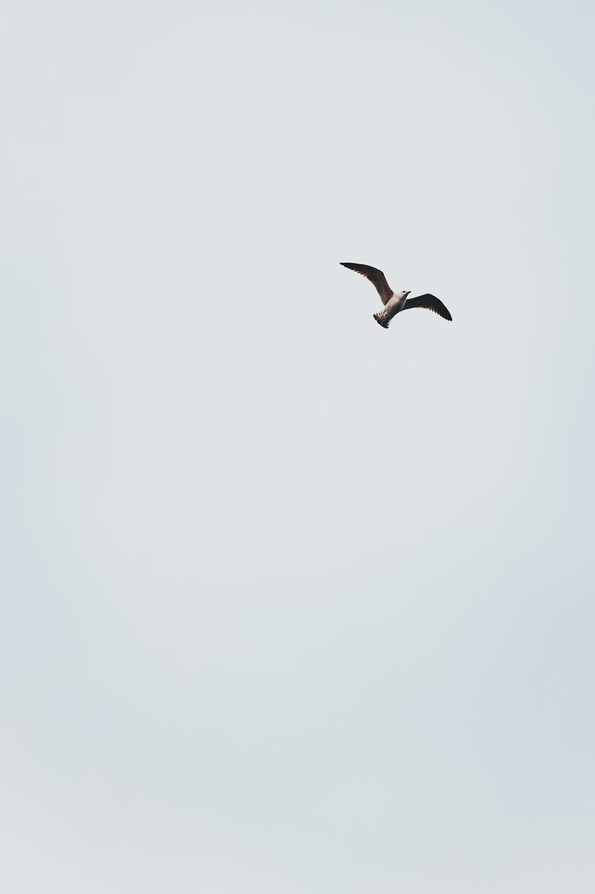
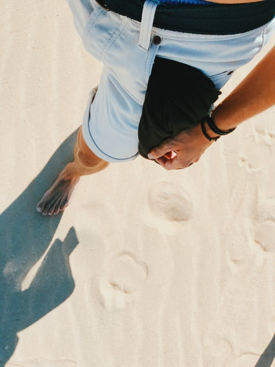

Experiences Are
More Satisfying
Than Things


Experiential travel is about presenting the customer
Experiential travel is about presenting the customer
with the surprise of the "unknown," the luxury of
"unexpected choices" and the empowerment
of "overcoming hurdles"
Studies have proven that people experience greater,
long-term happiness when they spend their money
on experiences, rather than things, Waldinger says.